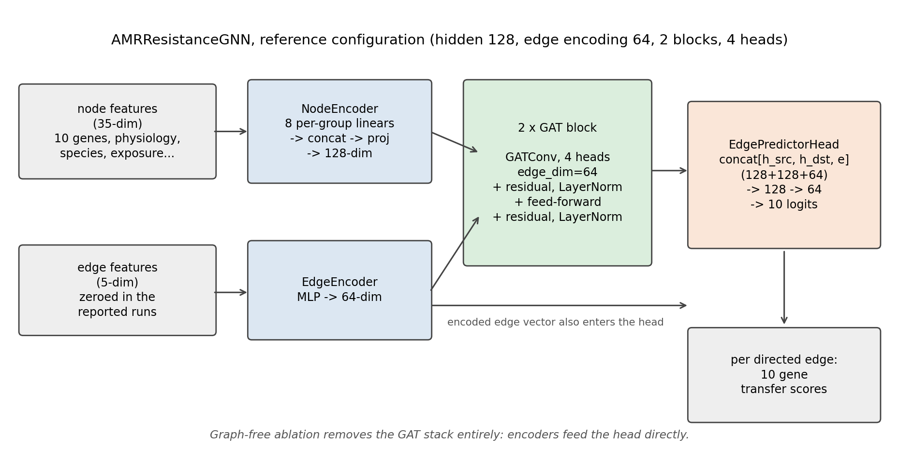
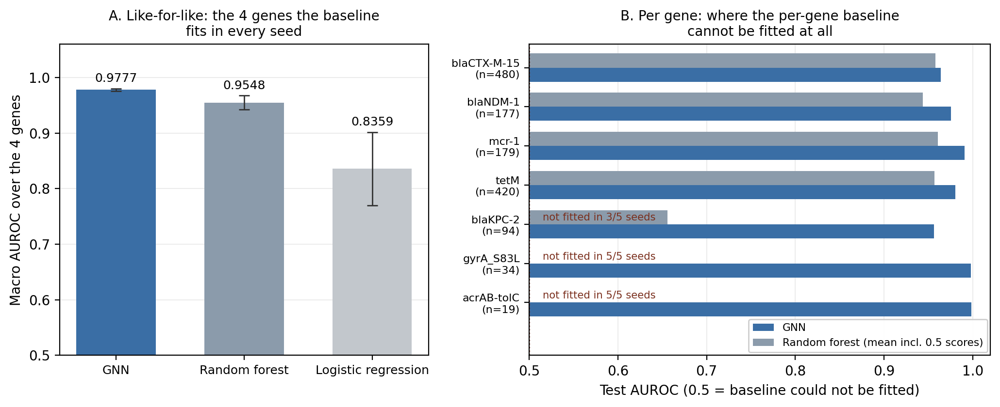
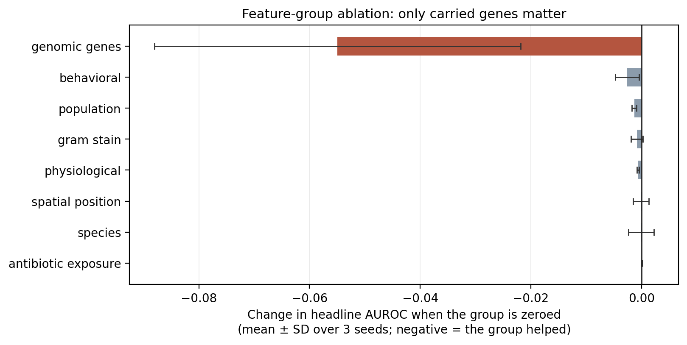
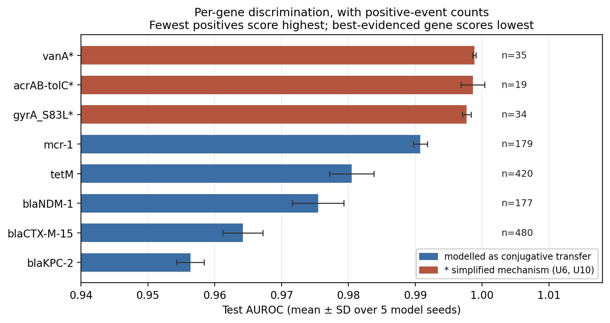

Draft, not submitted. No venue.
Assembled 2026-10-01 by paper/assemble.py from paper/draft/.
Every number is traceable to paper/claims_to_numbers.md; figures are regenerated from committed result files by paper/make_figures.py.
Horizontal gene transfer moves antimicrobial resistance genes between bacteria, but individual transfer events are hard to observe directly in natural communities, which makes supervised learning on them difficult to set up. We use an agent-based simulation, in which every transfer is recorded as it happens, to pose a task with exact labels: given a snapshot of a bacterial population, predict for each directed cell-to-cell contact and each resistance gene whether that gene is transferred in the next time window. We train a graph attention network on this task and evaluate it against per-gene random forest and logistic regression baselines.
The network reaches a test AUROC of 0.9805 ± 0.0021 on the five genes our per-gene random forest can fit in every seed, against 0.9647 ± 0.0031 for that baseline, ahead on all five model seeds; its macro average over the eight genes in our evaluation policy is 0.9676 ± 0.0076. That comparison is the one result that held steady across both a threefold increase in simulated data and a correction to the evaluation itself. The graph contributes little: removing message passing between cells changes the headline by +0.0065 ± 0.0086 and is positive in only three seeds of five, so we cannot distinguish its contribution from zero, while the genes a cell already carries dominate every other feature group by an order of magnitude.
We are explicit about what these figures do not establish. The simulator transfers genes only between cells of the same species, so the interspecies transfers that dominate the literature on these genes are absent from the task, the labels and the evaluation alike; in our dataset only 0.107% of contacts are cross-species, and none of them carries a transfer, so the model is evaluated almost entirely on within-species pairs. Our held-out split holds out whole simulation runs, but those runs come from the same five scenarios and five species used in training, so generalisation to unseen scenarios or species is untested. Three of the eleven modelled genes are moved by a mechanism that is not their real one, and several parameters that resemble measurements are invented; all are labelled as such. No external validation against real genomic data exists: our attempt failed because the isolate data we could obtain carries resistance phenotypes rather than per-isolate gene calls. Under these conditions we read a high AUROC as a statement about the difficulty of the task as posed rather than as evidence that the model has learned conjugation. We also report a methodological result we think generalises beyond this system: an earlier version of this work split the data by snapshot rather than by simulation run, and that alone inflated the headline by 0.0176 AUROC and the two rarest genes by roughly 0.09 — turning scores of 0.999 into 0.87–0.89. What we take to be transferable is the formulation, an exactly labelled per-contact, per-gene transfer task, together with that cautionary result.
Antimicrobial resistance (AMR) is a major and growing threat to the treatment of bacterial infections [1, 2]. A central route by which resistance spreads between bacteria is horizontal gene transfer (HGT), in which resistance genes move from one cell to another — for example by plasmid conjugation — rather than arising independently in each lineage [3, 4]. Whether a transfer happens depends on local, cell-level conditions such as contact between cells and the physiological state of the donor [5, 6]. In natural bacterial communities, however, there is a gap between what is known about HGT from laboratory experiments and what is known from natural environments [7], and even reliably assigning mobile genetic elements to their host cells in such communities has been difficult [8].
Agent-based simulation offers a setting in which every transfer event is recorded. In an agent-based (individual-based) model, each bacterium is an explicit agent that follows stated rules [9], and such models have been used to study plasmid transfer in spatially structured populations [10, 6]. In our model these rules cover growth, death, stress responses and gene exchange, so the ground truth of which cell passed which gene to which neighbour is known exactly. This makes it possible to pose a supervised learning problem that is not available from observational data: given a snapshot of a bacterial population, predict which resistance genes will be transferred along which cell–cell contacts in the next time window. Graph neural networks (GNNs) are a natural fit for this problem, because the population can be represented as a graph of cells (nodes) connected by spatial proximity (edges), and the prediction target is defined per edge; we use graph attention networks [11].
In this paper we build such a system and evaluate it with the aim of reporting only what the numbers support. We develop an agent-based AMR simulation with explicit conjugation-style HGT, and a graph attention network that predicts per-gene transfer on each directed cell–cell edge. All reported results are within-simulation: the labels are the simulator's own recorded transfer events, and we have not yet validated the predictions against real genomic data (Section 5).
Scope. Our simulator models intraspecies transfer only: a gene moves between two cells of the same species, so a contact between cells of different species is a negative example by construction. This is a substantial restriction rather than an incidental one, because interspecies and intergenus transfer of several of the exact genes we model is documented — the mcr-1 colistin-resistance plasmid was conjugated into Escherichia coli and maintained in Klebsiella pneumoniae and Pseudomonas aeruginosa [12], and an NDM-1 carbapenemase plasmid was conjugated from Citrobacter freundii into an E. coli recipient [13]. The prediction task we report on is therefore easier than the corresponding task in a community of mixed species. A second qualification applies to the evaluation itself: our held-out split holds out whole simulation runs, so the figures below do measure generalisation to unseen runs — but those runs come from the same five scenarios and five species used in training, so generalisation to unseen scenarios or species is untested. Both restrictions should be kept in mind when reading the figures below (Sections 3, 5 and 6).
Our contributions are:
A per-edge, per-gene HGT prediction task grounded in recorded simulation events, with a documented simulation whose biology exists in two explicitly versioned forms. Results are reported on the corrected version (Section 3).
A GNN that outperforms a per-gene Random Forest baseline, under the evaluation described above. On the five resistance genes our per-gene Random Forest baseline can be fitted to in every seed, the GNN reaches a test AUROC of 0.9805 ± 0.0021, against 0.9647 ± 0.0031 for the Random Forest, and is better on all 5 of 5 seeds (Section 4). Both models are evaluated on the same held-out runs, so this is a like-for-like comparison between the two approaches on this task. It is the one result that survived both a threefold increase in simulated data and a correction to our evaluation (Section 4.9), which is why we lead with it; it is not evidence about behaviour on unseen scenarios, unseen species, or interspecies transfer, none of which we test.
A measurement of what a snapshot-level split costs on this kind of task. An earlier version of this work split the data by snapshot rather than by simulation run, so snapshots three simulated steps apart — from the same run and the same founding population — sat on both sides of the split. Rerunning both splits on identical data shows that this inflated the headline by 0.0176 AUROC and the two rarest genes by roughly 0.09 and 0.07, turning scores of 0.999 into 0.87–0.89 (Section 4.9). We report this because the inflation is concentrated precisely where it is least visible and most flattering: on the rare genes whose near-perfect scores are the most quotable numbers a paper like this produces.
An honest account of where the signal comes from. Message passing over the contact graph shows no reliable benefit: +0.0065 ± 0.0086 AUROC, positive in only 3 of 5 seeds, a spread that includes zero. The genes a cell already carries are by far the most important input (−0.0442 ± 0.0071 when removed, with no other feature group distinguishable from zero), while edge features and local antibiotic exposure add no measurable signal. For antibiotic exposure this is under our dosing protocol, in which drug is present for only 5 of the 80 simulated steps (Section 4).
A reproducible pipeline: the simulation and training-data generation are seeded and
deterministic across processes (verified byte-for-byte for the frozen paper_v1
configuration), GPU training with the same seed reproduces test AUROC to within
1.6 × 10⁻³, and every reported number is a mean ± standard deviation over independent model
seeds (Section 3).
Individual-based (agent-based) models represent each microbial cell explicitly. They have been used to study how the behaviour of individual cells gives rise to population-level patterns, from biofilms to phage–CRISPR dynamics [9]. General-purpose frameworks include iDynoMiCS, for individual-based modelling of biofilms [14], and BSim, an agent-based tool for bacterial populations in systems and synthetic biology [15].
Several studies model plasmid transfer specifically. - Krone et al. present an individual-based lattice model of plasmid transfer and persistence in spatially structured populations, and compare its predictions with agar-surface experiments [10]. - Merkey et al. extend an individual-based biofilm model with plasmid carriage and transfer by individual cells. They use it to show, in silico, that growth-dependent conjugation limits plasmid invasion of biofilms [6]. - Seoane et al. use an individual-based experimental framework to estimate the main parameters governing conjugation at the single-cell scale [5]. - At a much coarser scale, the VERA model simulates the spread of resistance between people, including transfer of resistance determinants from commensal gut bacteria to a pathogen [16].
These models use simulation to test mechanistic hypotheses about how plasmids and resistance spread. We use simulation for a different purpose: as a source of exactly labelled transfer events for training and evaluating a predictive model. This purpose carries a limitation that the work above does not share to the same degree. Krone et al., for example, compared their model against experiments. Our simulator's per-step transfer probabilities are not fitted to experimental conjugation data, and all of our results are within-simulation (Section 5).
Machine learning is increasingly used to predict antimicrobial resistance phenotypes from bacterial gene content and genome composition. A recent review notes that such models typically treat genes as independent predictors [17].
Closer to our task, two lines of work predict the transfer of resistance genes rather than the resistance phenotype. - Ellabaan et al. identify putative horizontally transferred resistance genes and the gene-exchange networks that disseminate them across bacterial genomes. They then use the associated mobilisation elements to forecast where known resistance genes may spread [18]. The confirmatory analysis in that paper was later revised in an Author Correction. - Zhou et al. predict a network of recent HGT events between genomes from their functional gene content [19]. An event is defined by near-identical DNA shared by distantly related organisms. A random forest on functional profiles gave the best performance. A baseline graph convolutional network performed similarly to it, and improved as network-topology information was added.
Both operate on real genomes. Transfers are therefore inferred from sequence similarity, at the level of genomes and over evolutionary time. Our task is defined at the level of individual cells and their contacts, over the next simulated time window, with labels taken from recorded events. The two settings trade off in opposite directions. Genome-level work has real data but indirect labels; ours has exact labels but simulated data.
Graph neural networks have recently been applied to resistance problems in which graph nodes are isolates or patients. - AMR-GNN treats each bacterial isolate as a node, connects isolates by genomic distance, and predicts resistance phenotypes by node classification [20]. - Donabauer et al. apply graph neural networks to time-dependent graphs of patient movements within a hospital to identify carriers of vancomycin-resistant enterococci [21]. - The graph convolutional network of Zhou et al. (Section 2.2) operates on a network of genomes [19].
Our graph is at a finer scale. Nodes are individual simulated bacterial cells, edges are spatial contacts between them, and the prediction target is defined per edge and per gene: whether a given resistance gene is transferred along a given contact. We use graph attention [11] for this.
In the literature we reviewed, we did not find prior work that poses per-contact, per-gene HGT prediction among individual cells as a supervised learning problem. We position our contribution as bringing together the individual-based modelling of plasmid transfer (Section 2.1) and graph-based learning for resistance (Sections 2.2–2.3). We do not claim to identify a previously unstudied problem.
The simulator is an agent-based model built on Mesa 3.5.1. Bacteria occupy an 80 × 60 multi-agent grid on which several cells may share a position. Each simulated step, every living cell updates its energy, its stress response and its persister state, takes antibiotic damage, attempts mutation, attempts gene transfer, updates its biofilm status, moves and attempts division, in that order.
Five bacterial species are modelled (Escherichia coli, Klebsiella pneumoniae, Acinetobacter baumannii, Pseudomonas aeruginosa and methicillin-resistant Staphylococcus aureus), each with its own doubling time, baseline fitness, baseline mutation rate, biofilm propensity, motility, intrinsic resistance genes and a set of genes it may acquire. Ten resistance genes are modelled, drawn from CARD, spanning β-lactamases (blaTEM-1, blaCTX-M-15, blaKPC-2, blaNDM-1), efflux systems (mexAB-oprM, acrAB-tolC), target alteration (gyrA_S83L, mcr-1), ribosomal protection (tetM) and glycopeptide resistance (vanA); the corrected biology adds mecA as an eleventh. Six antibiotics are modelled (ciprofloxacin, meropenem, colistin, vancomycin, ampicillin, tetracycline), each as a concentration field over the grid that diffuses and decays.
A cell's protection against a drug is combined multiplicatively over its genes, as independent probabilities, and is then raised by biofilm membership and by the persister state. For a bactericidal drug, damage accrues each step as a sigmoid (Hill-type) function of the locally effective concentration,
damage = E_max · C^n / (EC50^n + C^n),
with EC50 set to the drug's minimum bactericidal concentration and, in the code, E_max = 0.3 and n = 2. Damage accumulates; a cell begins dying at 0.7 and dies at 1.0. Bacteriostatic drugs delay division instead of causing damage. E_max and the Hill coefficient are invented parameters: neither is taken from a cited source, and because no real duration is assigned to a simulated step, neither the damage rate nor the per-drug decay rates can be compared against measured pharmacokinetics. We report them as simulator settings, not as pharmacological estimates.
Transfer is modelled as conjugation between neighbouring cells. A cell attempts transfer on a randomly chosen 30% of its steps. When it does, it considers every cell in its immediate (Moore radius 1) neighbourhood and, for each gene it carries, transfers that gene with probability
p = acquisition_prob(gene) × (2 if the donor's SOS response is active) × m_biofilm,
where m_biofilm is 4 when both cells are in a biofilm, 1.5 when one is, and 1 otherwise, and
p is capped at 0.95. The recipient must not already carry the gene, and the gene must be in
the recipient species' acquirable set. The biofilm multipliers follow the observation that
biofilm matrices raise conjugation frequency; the per-gene acquisition_prob values
(0.01–0.05 per step) and the 30% attempt rate are invented parameters with no cited source.
Three restrictions define the task, and all three must be read alongside the results:
Besides transfer, a cell can gain a gene by inheriting it at division, by starting with its species' intrinsic genes, or through a mutation step. The mutation step has a branch that adds a uniformly random gene from the species' acquirable set with no donor at all. This last route has no biological counterpart — an acquired gene must come from somewhere — and exists only to seed genes into the population. It matters for interpreting the results, because no acquired gene is present at initialisation, so every gene's first carrier arises this way. How readily a gene seeds therefore depends on the size of its species' acquirable set, on whether it has an additional seeding route, and on how many scenarios contain a species that can carry it; and however it seeds, the resulting count is then amplified by spread, so that the earlier a gene happens to seed, the more events it accumulates. The number of transfer events per gene is consequently an outcome of the seeding code and of chance rather than of gene epidemiology. Consistent with that, three of the genes in our dataset share the same species availability and near-identical transfer probabilities yet differ roughly two-fold in their event counts. We therefore do not interpret per-gene differences biologically anywhere in this paper.
Only recorded transfer events produce the supervised labels; genes gained by the other three routes produce no label.
The simulation's biology exists in two explicitly versioned forms, and we report on the corrected one.
paper_v1 is the original configuration, frozen. A regression test checks that its
simulated states and its generated training pairs are byte-identical to the pre-versioning
code under more than one Python hash seed.
lab_v2 is the corrected configuration and the one all reported results use. Its
differences from paper_v1, each with the source that motivated it, are:
| Change | Basis |
|---|---|
| MRSA's intrinsic gene is mecA rather than tetM | CARD ARO:3000617 describes mecA (PBP2a) as commonly associated with MRSA; CARD ARO:3000186 describes tet(M) as found on transposable elements, and EUCAST Expected Resistant Phenotypes v1.2 does not list S. aureus as expected-resistant to tetracyclines |
| acrAB-tolC removed from MRSA's acquirable set | AcrAB-TolC is a Gram-negative tripartite system (CARD ARO:3000384) |
| mecA is non-transferable | SCCmec mobilisation is not modelled (§3.1.2) |
| K. pneumoniae's blanket intrinsic acrAB-tolC replaced by species-level intrinsic resistance to ampicillin only | EUCAST Expected Resistant Phenotypes v1.2 rule 1.7 lists the K. pneumoniae complex as expected resistant to ampicillin/amoxicillin and ticarcillin, not to ciprofloxacin or tetracycline; ticarcillin is not simulated |
| Antibiotic diffusion conserves total drug | Bug fix: the original applied a kernel that already summed to one and then rescaled the field, removing drug every step, which contradicts a diffusion process |
| mecA fitness cost 0.275 | Ender et al. 2004, comparing the strains RA120 and BB255 |
A known limitation carried by both versions is that decay rates are unvalidated against real pharmacokinetics, for the reason given in §3.1.1.
We also note two residual issues we did not change, because changing them would alter the dataset: A. baumannii carries mexAB-oprM and acrAB-tolC as intrinsic genes although its characterised RND systems are AdeABC, AdeIJK and AdeFGH [28]; and blaTEM-1 is available only to E. coli, although it is common in K. pneumoniae [29].
From a simulation snapshot we build a graph whose nodes are living cells (subsampled to at most 300 per snapshot with a seeded generator) and whose edges join pairs of cells within three grid cells of one another, added in both directions. Each node carries a 35-dimensional feature vector: ten binary gene-presence flags; five physiological values (fitness, energy, stress level, accumulated antibiotic damage, normalised age); two behavioural flags (biofilm membership, persister state); normalised position; three population descriptors (local density, generation, offspring count); a five-way species one-hot; a two-way Gram stain indicator; and the local concentration of each of the six drugs. Each edge carries five features: normalised shared-gene count, absolute fitness difference, a both-in-biofilm flag, absolute stress-level difference, and a coarsened proximity band with three levels (same cell / within three cells / farther).
The edge radius of three is deliberately wider than the transfer radius of one. If the graph contained only transfer-eligible pairs, the existence of an edge would itself identify eligibility, which would put the label-generating gate back into the graph's topology. Including near-but-ineligible pairs under the same coarse proximity band prevents that.
The target is defined per directed edge and per gene: did a recorded transfer of that gene occur from the source cell to the target cell within the snapshot window? Labels come from the simulator's own event log, recorded at the moment a transfer fires, and never from comparing genomes between snapshots. This distinction is necessary because a cell can gain a gene by mutation in the same window in which an eligible neighbour happens to carry it; inferring transfer from genome differences would label that as a transfer from a cell that had nothing to do with it.
Each run initialises 120 cells, steps 15 times, then applies its scenario's drugs uniformly
and continues to 80 steps, taking a snapshot every three steps and pairing consecutive
snapshots. Under the corrected biology the dose is 0.25 µg/mL, cleared after five further
steps; this time-limited course is an invented protocol, expressed in steps because no real
step duration is defined. Five scenarios are used — ecoli_cipro,
klebsiella_carbapenem, pakistan_crisis, xdr_acinetobacter and mrsa_hospital — each
with ten data seeds, giving 50 independent simulation runs.
The resulting dataset (SHA-256 7492f6e14601ed8f…) contains 1,300 graph pairs,
6,029,316 edges and 4,763 positive transfer events. Positives are distributed very unevenly
across genes — blaCTX-M-15 1,446, tetM 1,230, mcr-1 766, blaNDM-1 554, blaKPC-2 536,
gyrA_S83L 109, vanA 75, blaTEM-1 24, acrAB-tolC 23 and mexAB-oprM 0 — for the structural reason
given in §3.1.2, not for any biological reason. Against ten gene outputs the positive rate is
approximately 7.9 × 10⁻⁵ per edge-gene pair.
The held-out split holds out whole simulation runs, not individual snapshots. Runs are assigned to training, validation and test in a 6 / 2 / 2 ratio within each scenario, giving 30 training, 10 validation and 10 test runs and 780 / 260 / 260 graph pairs. Stratifying by scenario prevents a random draw from placing every test run in one scenario. The same split seed is used by the neural model, the baselines and calibration, so all are evaluated on the same held-out edges.
This matters more than it may appear, and an earlier version of this work got it wrong. A split taken over snapshot pairs places snapshots three simulated steps apart — from the same run, the same founding population and the same random seed, containing largely the same individual cells — on both sides of the split. The held-out set then measures generalisation to new time windows of runs the model has already seen. We quantify what that cost in §4.9: on identical data it inflated the headline by 0.0176 AUROC and the two rarest genes by roughly 0.09.
What the present split does not establish is generalisation beyond the runs themselves. The ten held-out runs are drawn from the same five scenarios, with the same five species and the same initial conditions, as the training runs. Unseen scenarios and unseen species remain untested, and Section 5 treats that as a live limitation rather than a solved one.
Because the baselines draw a fixed-size subsample of the training edges, that subsample is scaled with the dataset — 303,449 edges, holding the sampling fraction at the 8.264% used by the earlier, smaller reference set — so the baselines see the same share of the evidence rather than a shrinking one.
Two corrections separate the numbers reported here from earlier ones, and we record them because they change what the figures mean rather than merely improving them.
Label definition. Labels were originally inferred by comparing genomes between snapshots, which conflates transfer with independent mutation and produces positives attributable to a cell that did not donate anything. Labels now come from recorded events only.
Feature leakage. Four inputs were direct components of the rule that generates the label: the same-species edge flag and the raw edge distance (both hard preconditions for transfer), a transferable-gene count that mirrored the eligibility test almost exactly, and the SOS flag (the literal term that doubles the transfer probability). All four were removed. Node features went from 36 to 35 dimensions and edge features from 8 to 5. Raw distance was replaced by the coarsened proximity band described in §3.3.1, and the transferable-gene count by a plain shared-gene count. We confirmed which layout produced the earlier results by rebuilding the architecture under both: the pre-correction layout reproduces a parameter count of 349,370 and the corrected layout 349,162, matching the counts logged by the respective runs. Results obtained before these two corrections are not comparable with those reported here and are not reported. An audit file referenced in a source comment as holding the full leakage analysis is not present in the repository; §3.4 is the account of record.
Separately, results obtained with the original default hyperparameters are superseded by the tuned configuration of §3.5, selected on the validation split.
The model is a graph attention network [11]. Node features are encoded by one small linear encoder per feature group — genomic, physiological, behavioural, spatial, population, species, Gram stain, drug exposure — whose outputs are concatenated and projected to the hidden width, so that groups with different scales and meanings are not mixed by a single projection. Edge features are encoded separately by a two-layer network.
Each message-passing block applies multi-head graph attention that takes the encoded edge vector as an edge attribute, followed by a residual connection and layer normalisation, then a position-wise feed-forward network with a further residual connection and normalisation. For each directed edge, a prediction head receives the source representation, the target representation and the encoded edge vector, and emits one logit per gene.
The configuration used for all reported results, selected on the validation split, is: hidden width 128, edge encoding width 64, two attention blocks, four heads, dropout 0.15. Training uses binary cross-entropy with a positive-class weight of 15 to offset the extreme imbalance, AdamW at learning rate 10⁻³ with weight decay 10⁻⁴ and cosine annealing, gradient clipping at 1.0, batch size 8, and at most 60 epochs. Early stopping watches validation AUROC with patience 12 and a minimum improvement of 10⁻³, but is suppressed for the first 20 epochs.
That warm-up is not cosmetic. Without it, one seed stopped at epoch 13 because validation AUROC had peaked at epoch 1 — on an essentially untrained model — and had not yet recovered from a subsequent dip; the retained checkpoint was worse on every gene. The behaviour was reproducible on retraining, and the warm-up resolves it: that seed reaches the same range as the others, while a normally-behaved seed is unchanged. With the warm-up in place, every seed in the reported runs trained for 20 to 39 epochs with its best epoch between 11 and 27.
Edge features are zeroed in all reported runs. Tuned models with and without edge features were indistinguishable on the frozen biology, so the reported configuration does not use them. This should not be read as evidence that edge attributes are harmful; the one earlier result that appeared to show a cost was the early-stopping artefact described above.

Figure 1. Model architecture, reference configuration. Schematic of AMRResistanceGNN as configured for every reported result: node features (35-dim) through a per-group NodeEncoder to width 128, edge features (5-dim) through an EdgeEncoder to width 64, then 2 graph-attention blocks (4 heads, each with a residual connection, layer normalisation and a feed-forward sublayer), then a head that concatenates the two endpoint representations with the encoded edge vector and emits 10 per-gene logits for each directed edge. Edge features are zeroed in all reported runs, so that pathway is present but carries no information. The graph-free ablation removes the attention stack, leaving the encoders feeding the head directly, and costs 0.0065 ± 0.0086 headline AUROC (claim S4). Configuration read from gnn_hparams and feature_dims; layer structure from ai/gnn_model.py.
Per-gene classical baselines. Random forest and logistic regression are trained one-versus-rest per gene on the flattened concatenation of the two endpoint node vectors and the edge vector, using a seeded 100,000-edge subsample of the training edges. The random forest uses 300 trees, maximum depth 8 and balanced subsampling. A gene with fewer than five positives in that subsample cannot be trained and is scored 0.5 by construction. We keep this cutoff as it is: lowering it for the comparison would change the baseline rather than test it.
Because the subsample is drawn independently for each seed, trainability is a per-seed property. The headline comparison is therefore computed on the genes the random forest fits in every seed — five genes at the present dataset size — so that no 0.5-by-construction score enters it. The genes it fits unreliably or never are reported separately in §4.2. We apply that criterion to the current data rather than freezing a gene list: on the earlier, smaller dataset only four genes qualified, because blaKPC-2 then cleared the five-positive threshold in just two seeds of five.
Message-passing ablation. The same architecture with the attention blocks removed, so that node and edge encodings feed the prediction head directly, isolates the contribution of message passing.
Feature-group ablation. Groups of node features are zeroed one at a time to measure each group's contribution.
Genes are handled according to a fixed, pre-recorded policy. mexAB-oprM is excluded, having no transfer events by construction. vanA is evaluated but always reported separately and labelled a simplified mechanism. The headline macro average is taken over the remaining eight genes. One of those eight, blaTEM-1, has no positives in the test split (five in the whole dataset), so no model can be scored on it and the macro average is effectively over seven; we say so wherever the figure appears rather than implying eight evaluable genes.
We report AUROC as the primary metric, since the positive rate makes accuracy uninformative, alongside AUPRC and expected calibration error. Every figure is a mean and standard deviation over five independent model seeds, with three seeds for the ablations; the seeds vary model initialisation and training, not the data. Per-gene AUROCs are reported as discrimination figures only, always with their positive counts, and are not interpreted as reflecting the relative mobility of real genes, for the reason given in §3.1.2.
Data generation and training are seeded and deterministic across processes: identical simulated states and identical training pairs are produced under different Python hash seeds, which a regression test enforces for the frozen biology. Retraining the same seed on a GPU reproduces test AUROC to within 1.6 × 10⁻³.
All figures are means and standard deviations over five independent model seeds (three for the ablations), on the held-out split described in Section 3.3.3. That split holds out whole simulation runs, so throughout this section "test" means runs the model never trained on. It does not mean unseen scenarios or unseen species: the ten held-out runs are drawn from the same five scenarios as the training runs.
These numbers replace an earlier set, and the replacement is itself a result. Every figure in this section was previously computed on a split taken over snapshot pairs, which placed snapshots three steps apart — from the same run, the same founding population and the same seed — on both sides of the split. Correcting that cost 0.0176 AUROC on the headline and far more on the rare genes (§4.9). We report the corrected numbers throughout and state the size of each change where it matters, rather than quietly substituting them. Unless stated otherwise, "headline AUROC" is the macro average over the eight genes fixed by the evaluation policy of Section 3.7, one of which (blaTEM-1) has no positives in the test split, so the macro is in practice over seven.
On the five genes the per-gene random forest can be fitted to in every seed — blaCTX-M-15, blaKPC-2, blaNDM-1, mcr-1 and tetM — the GNN reaches a test AUROC of 0.9805 ± 0.0021 against 0.9647 ± 0.0031 for the random forest. The GNN is ahead on all five of five seeds. We treat this as the primary comparison, because it is the only one in which both models are actually fitted to the same genes in every run.
This comparison is the most robust result in the paper. The gap is 0.0158 here; on the earlier, three-times-smaller dataset it was 0.0229, and on that same smaller dataset under the uncorrected split it was also 0.0204. A gap stable to within 0.003 across both a 3.3-fold increase in data and a correction to the evaluation itself is the one claim we would expect to survive further scrutiny.
The qualifier "in every seed" is doing real work here, and an earlier version of this analysis got it wrong. The baselines draw their 100,000-edge training subsample independently per seed, so a gene's trainability is a per-seed property rather than a fixed one. blaKPC-2, with 94 positive events dataset-wide, clears the five-positive threshold in only two of the five seeds; in the other three the random forest scores it 0.5 by construction. Including it in this comparison — as we initially did — folds that construction artefact into the baseline's score, which is precisely what §4.1's closing paragraph says must not be done. It inflated the gap roughly threefold, from 0.023 to 0.079, and the tell was the baseline's implausibly large standard deviation, which turned out to be bimodal across seeds. blaKPC-2 is reported under coverage in §4.2 instead.
The GNN's own headline macro, over the eight genes of the evaluation policy, is 0.9676 ± 0.0076 (previously 0.9805 ± 0.0012 under the uncorrected split). Logistic regression reaches 0.7911 ± 0.0336 on the same headline macro, and the random forest 0.8711 ± 0.0366.
We deliberately do not quote a headline-macro difference between the GNN and the random forest. The random forest's headline macro is depressed by the genes it cannot reliably train, which are scored 0.5 by construction rather than by any prediction; a difference computed across all eight genes would therefore combine a genuine performance gap with a coverage gap and overstate the former. The two are reported separately: performance in this subsection, on the four genes both models always fit, and coverage in §4.2.

Figure 2. Headline comparison, and where the per-gene baseline cannot be built. Panel A. Macro AUROC over the five genes the random forest can be fitted to in every seed (blaCTX-M-15, blaKPC-2, blaNDM-1, mcr-1, tetM): GNN 0.9805 ± 0.0021, random forest 0.9647 ± 0.0031, logistic regression 0.8590 ± 0.0248; the GNN is ahead on 5 of 5 seeds (claim S2). The set is the stated criterion applied to the current data; on the earlier, smaller dataset blaKPC-2 cleared the five-positive threshold in only 2 of 5 seeds and was therefore excluded. This comparison is notably robust: the gap is 0.016–0.023 across a 3.3× increase in data and the correction from a snapshot-level to a run-level split. Panel B. Per-gene view, with each gene's positive count in the held-out split — the evidence behind each estimate. The dotted line marks 0.5, the score assigned when a gene cannot be fitted at all. At this dataset size only acrAB-tolC (5 held-out positives) is never fitted by the baseline; gyrA_S83L (24) is fitted in 3 of 5 seeds and vanA is now fitted in all 5. The baseline bars for partially fitted genes are means that include those 0.5 scores, so they summarise availability rather than skill. The coverage gap has narrowed sharply as data grew, which is why it is no longer presented as a headline contribution. Claims S2, S2b, U5. Values from per_seed[*].per_gene_auroc and the held-out split.
Our per-gene baselines require at least five positive examples for a gene within the training subsample they draw, and that subsample is drawn independently for each seed. On a smaller dataset this excluded three genes to varying degrees, and we presented the resulting coverage advantage as a contribution. At the present dataset size it does not support that billing, and we have demoted it.
| Gene | Held-out positives | Baseline fitted | GNN test AUROC |
|---|---|---|---|
| acrAB-tolC* | 5 | 0 of 5 seeds | 0.8890 ± 0.0506 |
| gyrA_S83L* | 24 | 3 of 5 seeds | 0.9822 ± 0.0049 |
| vanA* | 5 | 5 of 5 seeds | 0.8669 ± 0.0504 |
| blaKPC-2 | 61 | 5 of 5 seeds | 0.9761 ± 0.0045 |
* transfer modelled by a simplified mechanism (Section 3.1.2).
Two things changed. First, tripling the data let the baselines fit almost everything: vanA went from one seed in five to all five, blaKPC-2 from two to all five, gyrA_S83L from none to three. Only acrAB-tolC is still never fitted. The coverage advantage was therefore substantially a property of the data regime, not of the method, and it shrinks as data grows.
Second, the one gene that still carries it is estimated from five held-out positive events, at 0.8890 ± 0.0506. That spread is over model seeds on a fixed split; the sampling uncertainty attached to five events is far larger and is not shown. We do not think a single gene, measured that imprecisely, can carry a headline claim.
What survives is a structural observation, and we state it as such rather than as a result: a per-gene model cannot be built at all below its positive threshold, whereas a model trained jointly across genes always emits a prediction, whatever that prediction is worth. In this dataset that distinction binds for one gene out of ten. We return to it in Section 5 as a limitation of the comparison rather than an advantage of the method.
The GNN is evaluated on seven of the eight policy genes plus vanA separately. The eighth, blaTEM-1, has 24 positive events in the dataset but none in the held-out split, so no model of any kind can be scored on it; we report it as not evaluable rather than as a result.
Message passing shows no reliable benefit. Removing the attention blocks, so that node and edge encodings feed the prediction head directly, changes the headline by +0.0065 ± 0.0086 (0.9676 with message passing against 0.9611 ± 0.0019 without). The standard deviation exceeds the mean, and the per-seed values are +0.0188, −0.0005, +0.0052, +0.0112 and −0.0022: positive in three seeds of five, negative in two. On this evidence we cannot distinguish the contribution of the contact graph from zero.
We previously reported this as a small but consistent gain, +0.0031 ± 0.0014 and positive in all five seeds. That consistency did not survive the corrected split. It is worth being precise about what this does and does not mean: we are not claiming message passing is useless in general, only that in this task, at this scale, with this architecture, we have no evidence that it helps. Since the graph-free variant retains essentially all of the performance, almost everything the model exploits is available from the two endpoint feature vectors alone.
The genes a cell already carries dominate. Zeroing feature groups one at a time, only the genomic group matters: removing it costs 0.0442 ± 0.0071 headline AUROC (three seeds). No other group is distinguishable from zero — every one has a standard deviation at least as large as its own mean, the largest being species (−0.0046 ± 0.0102), spatial position (+0.0052 ± 0.0083) and physiological (+0.0051 ± 0.0125). The estimate for the genomic group is substantially tighter than the one we reported previously (−0.0549 ± 0.0331), so this conclusion is now better supported than it was, not worse.
Local antibiotic exposure adds no measurable signal. Zeroing the six drug-concentration features changes the headline by +0.0006 ± 0.0011 — that is, removing them does not hurt. This deserves an explicit caveat rather than a conclusion about antibiotic pressure: under our dosing protocol the drug is present for only five of the eighty simulated steps, so most snapshots carry no exposure to measure. The correct reading is that these features carry no signal in this protocol, not that antibiotic exposure is irrelevant to gene transfer.

Figure 3. Feature-group ablation. Change in headline AUROC when each node-feature group is zeroed, mean ± SD over 3 seeds; more negative means the group contributed more. Only the carried-gene group matters: -0.0442 ± 0.0071. Every other group falls within ±0.003, which is inside seed-to-seed variation and is not interpreted as an effect in either direction — including antibiotic exposure, for which the drug is present in only 5 of the 80 simulated steps under this dosing protocol (claim U4). Full-model reference: 0.9687. Values from ablation. Claims S5, U4.
Predicted probabilities are well calibrated, with an expected calibration error of 0.0012 ± 0.0003, unchanged by the correction.
Headline AUPRC is 0.0145 ± 0.0057 (previously 0.0316 ± 0.0293). This is far above the base rate of approximately 7.9 × 10⁻⁵ positives per edge-gene pair, so the ranking carries real information in absolute terms; but the standard deviation is nearly as large as the mean, so the figure is unstable across seeds and we do not treat it as a headline result. The instability is expected given how few positives the rarer genes contribute.
| Gene | GNN test AUROC | Positives in the held-out split |
|---|---|---|
| blaNDM-1 | 0.9860 ± 0.0054 | 16 |
| tetM | 0.9844 ± 0.0010 | 311 |
| gyrA_S83L* | 0.9822 ± 0.0049 | 24 |
| blaCTX-M-15 | 0.9821 ± 0.0024 | 212 |
| blaKPC-2 | 0.9761 ± 0.0045 | 61 |
| mcr-1 | 0.9738 ± 0.0018 | 217 |
| acrAB-tolC* | 0.8890 ± 0.0506 | 5 |
| vanA* | 0.8669 ± 0.0504 | 5 |
| blaTEM-1 | not evaluable | 0 |
* transfer modelled by a simplified mechanism (Section 3.1.2).
We offer no biological interpretation of this ordering. Two confounds account for it without any appeal to gene biology.
The first is evidence. The two genes at the bottom are estimated from five held-out positive events each, and they carry standard deviations an order of magnitude wider than every other row. Those spreads are over model seeds on a fixed split and therefore understate the true uncertainty, which at five events is dominated by sampling. Among the genes with tens or hundreds of held-out positives there is no clear relationship between count and score: blaNDM-1 scores highest on 16 events, mcr-1 lowest of that group on 217.
The second is the seeding artefact of Section 3.1.2, and tripling the dataset tested it directly. If per-gene counts were a stable property of each gene, every gene's count would have grown with the dataset, by 3.53×. Instead they grew by between 1.21× (acrAB-tolC, 19 to 23) and 5.70× (blaKPC-2, 94 to 536) — a 4.7-fold spread in what should have been a constant. The counts are high-variance outcomes of when a gene happens to seed, not properties of the gene.
A gene's position in this table therefore reflects the simulator's seeding code, the timing of a chance event, and the amount of evidence behind its estimate. We report the values for completeness and draw no per-gene conclusions from them.

Figure 4. Per-gene discrimination, with held-out positive counts. Per-gene test AUROC of the GNN, mean ± SD over 5 model seeds, each bar annotated with the number of positive transfer events for that gene in the held-out split — the evidence the estimate actually rests on, which is far more informative than the dataset-wide count. The two genes with only 5 held-out positives score lowest and carry by far the widest spread: acrAB-tolC 0.8890 ± 0.0506 and vanA 0.8669 ± 0.0504, against 0.97–0.99 for every gene with tens or hundreds of held-out positives. Those seed-to-seed spreads still understate the true uncertainty, which is dominated by sampling 5 events. This figure replaces an earlier version whose ordering ran the other way — under the superseded pair-level split these same two genes scored 0.9986 and 0.9988, the highest in the table. That ordering was an artefact of splitting snapshots rather than simulation runs, so test snapshots came from runs the model had trained on (claim U13). It is the clearest single illustration of what that split was doing. Do not read any version of this figure as a difficulty ranking over genes: per-gene counts are set by the simulator's seeding code (claim U12), not by gene biology. Starred genes (acrAB-tolC, gyrA_S83L) are chromosomal in real bacteria and are transferred by the simulator as a labelled simplification (claim U10); vanA is likewise simplified (U6) and is excluded from the headline macro. blaTEM-1 (0 held-out positives) and mexAB-oprM (0, in no species' acquirable set) cannot be scored and are absent. Counts from the held-out split; AUROCs from per_gene_auroc.gnn. Claims S9, U6, U8, U10, U12, U13.
vanA reaches a test AUROC of 0.8669 ± 0.0504 on five held-out positive events. It is excluded from the headline macro and reported here on its own, because the mechanism the simulator gives it is a simplification in two respects: the gene arises and spreads within MRSA, whereas the documented route is interspecies transfer of Tn1546 from Enterococcus faecalis, and Enterococcus is not modelled at all. This figure is a discrimination measurement on simulated events, not evidence about vancomycin resistance transfer.
mexAB-oprM is excluded entirely: it is present only as an intrinsic gene, appears in no species' acquirable set, and therefore has zero transfer events by construction. There is nothing to predict and no score to report.
Data generation and training are deterministic across processes. Identical simulated states
and identical training pairs are produced under different Python hash seeds, which a
regression test enforces byte-for-byte for the frozen paper_v1 configuration. Retraining the
same seed on a GPU reproduces test AUROC to within 1.6 × 10⁻³. (That tolerance was
2.1 × 10⁻⁴ on the earlier, easier split; the wider spread accompanies the harder task rather
than any change to seeding.) Every figure in this section is
a mean and standard deviation over independent model seeds, with the data held fixed, so the
reported spreads capture variation from initialisation and training order and not from data
generation.
The GNN discriminates simulated per-edge, per-gene transfer events well (headline AUROC 0.9676 ± 0.0076) and beats a per-gene random forest on the five genes that baseline fits in every seed (0.9805 ± 0.0021 against 0.9647 ± 0.0031, on five of five seeds) — the one result that held steady across both a threefold increase in data and a correction to the evaluation. Most of the signal is carried by the genes a cell already holds. Message passing cannot be distinguished from zero, and edge features and local drug exposure add nothing measurable. The coverage advantage we previously highlighted largely dissolved once there was more data, and now rests on a single gene measured from five held-out events. What none of these figures establish is stated in Section 5: no external validation, no test of unseen scenarios or species, and an intraspecies-only transfer model.
Because the correction and the larger dataset arrived together, we ran both arms on identical data so the two effects could be separated. Three result sets are therefore comparable: the original 15-run set under a snapshot-level split, the 50-run set under the same snapshot-level split, and the 50-run set under the run-level split used throughout this paper.
| 15 runs, snapshot split | 50 runs, snapshot split | 50 runs, run split | |
|---|---|---|---|
| Headline AUROC | 0.9805 ± 0.0012 | 0.9852 ± 0.0008 | 0.9676 ± 0.0076 |
| acrAB-tolC | 0.9986 ± 0.0018 | 0.9774 ± 0.0157 | 0.8890 ± 0.0506 |
| vanA | 0.9988 ± 0.0002 | 0.9349 ± 0.0211 | 0.8669 ± 0.0504 |
| Message passing | +0.0031, 5/5 seeds | +0.0059, 5/5 seeds | +0.0065, 3/5 seeds |
Reading across the first two columns isolates the effect of more data; reading across the last two isolates the effect of the split, with the data held identical. More data raised the headline slightly (+0.0047). The split correction lowered it by 0.0176, and lowered the two rarest genes by roughly 0.09 and 0.07 — an order of magnitude more. The reason is structural: those genes have five held-out positive events, and under a snapshot-level split their near-duplicates, three simulated steps away in the same run, sat in the training set.
This is the most useful result in the paper for anyone building a similar system, and Section 6.1 treats it as such.
We group these by what they limit: the claims the numbers support (§5.1), the biology the simulator implements (§5.2), the parameters it uses (§5.3), and the history of the pipeline itself (§5.4). Several are consequences of decisions we would make differently in a future version, and we say so where that is the case rather than presenting each as an inherent constraint.
No external validation. Every number we report is internal to the simulator: the labels are its own recorded transfer events, and the model is never tested against real genomic data. We attempted such a validation and it is not functional. The public isolate collections we obtained are antimicrobial-resistance phenotype tables with no per-isolate gene calls, so the comparison degenerates — gene prevalences collapse to 1.0 or 0.0 and the rank correlation is undefined. A meaningful comparison requires re-annotating assemblies with a resistance-gene caller to obtain the gene-level calls the model predicts over. We scope that as future work and make no claim of external validity here. Consequently nothing in this paper should be read as a clinical or epidemiological prediction.
The held-out split tests unseen runs, but not unseen scenarios or species. We now split by simulation run, stratified by scenario, so no test run contributed anything to training. That fixes a real defect — an earlier version split by snapshot, and §4.9 quantifies what it was costing — but it does not make the evaluation general. The ten held-out runs use the same five scenarios, the same five species and the same initial conditions as the thirty training runs. A model that had memorised scenario-specific regularities would still score well here. Testing that requires a leave-one-scenario-out protocol, which we have not run (§7.1).
The comparison is between our implementations, not between model families. Our per-gene random forest and logistic-regression baselines are one-versus-rest with a five-positive training requirement, applied to a subsample drawn independently per seed. Two genes fall below it in every seed and a third in three seeds of five; in those cases the baseline is scored 0.5 by construction. This is a property of how we implemented those baselines, not a limitation of random forests, and we do not claim otherwise. We kept the threshold rather than lowering it, because lowering it would have produced a different baseline rather than a fairer test of this one — but the consequence is that the coverage difference in §4.2 speaks to a design choice we made about the baselines as much as to the GNN.
For the same reason we do not quote a macro-averaged difference between the GNN and the random forest across all eight policy genes. Such a difference would combine a performance gap on the genes both models fit with a coverage gap on the genes only one model fits, and would substantially overstate the former. The two are reported separately throughout.
The coverage advantage we previously claimed did not survive more data. An earlier version of this work presented it as a contribution: that a jointly trained model yields predictions for genes a per-gene baseline cannot be fitted to at all. Tripling the dataset dissolved most of it. The baselines now fit vanA in every seed (was one in five), blaKPC-2 in every seed (was two) and gyrA_S83L in three (was none). Only acrAB-tolC is still never fitted, and its score, 0.8890 ± 0.0506, rests on five held-out positive events — too little evidence to carry a claim. What remains is structural rather than quantitative: a per-gene model cannot be built below its positive threshold, whereas a jointly trained one always emits a prediction. In this dataset that binds for one gene in ten, and it binds less as data grows, so it describes a small-data regime rather than a property of the method. We report it in §4.2 as an inconclusive finding and no longer as a contribution.
One gene cannot be evaluated at all. blaTEM-1 has five positive events in the entire dataset and none in the test split, so no model can be scored on it. The headline macro, nominally over eight genes, is in practice over seven. This is not a property of the gene: the simulator makes blaTEM-1 available only to E. coli, although it is in fact common in Klebsiella pneumoniae — one survey found it in the great majority of its carbapenemase- producing K. pneumoniae isolates [29] — and widening its availability would very likely make it evaluable. We report it as not evaluable rather than reporting a figure.
Per-gene results are not interpretable as biology. As set out in §4.5, per-gene AUROCs are confounded both by the evidence behind them — held-out positive counts span 5 to 311, and the two genes with only five score lowest with by far the widest spread — and by the seeding mechanism described below. We report them as discrimination measurements only.
Reported spreads are over model seeds, not over data. Every mean and standard deviation in Section 4 varies model initialisation and training order with the dataset held fixed. They therefore describe the stability of training, not sampling uncertainty in the dataset, and they understate total uncertainty — most sharply for the genes with the fewest positive events, where the sampling component is largest and is not represented at all.
Transfer is intraspecies only. A gene never crosses a species boundary in our simulator, so every cross-species contact is a negative example by construction. This excludes the route that matters most in the literature on these genes: the mcr-1 colistin-resistance plasmid was conjugated into Escherichia coli and maintained in Klebsiella pneumoniae and Pseudomonas aeruginosa [12]; an NDM-1 carbapenemase plasmid was conjugated from Citrobacter freundii into an E. coli recipient [13]; Tn916-borne tet(M) transferred from Lactococcus lactis to Enterococcus faecalis both in vitro and in a rat gut [22].
The consequence is one of absence rather than of class balance, and it is worth stating precisely because the intuitive version is wrong. One might expect this restriction to flood the negative class with cross-species pairs that are rejectable from species identity alone. It does not: only 0.107% of contacts in our dataset are cross-species (6,428 of 6,029,316), they occur in only one of the five scenarios, and none of them carries a transfer. Four scenarios contain a single species, and in the mixed scenario the two populations are seeded as separate spatial clusters that seldom come within contact range. What follows instead is that the interspecies case is effectively absent from the data: the model is evaluated almost entirely on within-species pairs, it has not been shown to do anything at all on interspecies transfer, and our metrics cannot register that omission. That is the case of greatest practical interest, and we have no evidence about it either way.
Three of the eleven genes move by a mechanism that is not their real one. We label these simplified mechanisms rather than leave them implicit.
These three genes are exactly the ones whose results are most easily over-read: two of them are the rare genes behind the coverage claim in §4.2, and the third posts the highest AUROC of any gene. Their figures measure the learning setup, not resistance biology.
Two further genes are handled by not transferring them, which is correct but is itself a simplification: mexAB-oprM exists only as an intrinsic gene and so has no events to predict, and mecA is marked non-transferable because SCCmec mobilisation is a mechanism the simulator does not implement and conjugation is the wrong substitute for it.
A residual species-level error we did not correct. Acinetobacter baumannii carries mexAB-oprM and acrAB-tolC as intrinsic genes, whereas its characterised RND efflux systems are AdeABC, AdeIJK and AdeFGH [28]; MexAB-OprM belongs to P. aeruginosa. We traced the consequences and could identify no effect on the reported numbers — neither gene is in A. baumannii's acquirable set, so neither can spread among those cells, and the only drug in the scenario that features this species is one that acrAB-tolC does not cover. We nonetheless record it rather than correcting it silently, because correcting it would change the dataset.
Genes appear from nowhere, and this shapes the dataset. No acquired gene is present at initialisation, so each one enters the population through a mutation branch that adds a uniformly chosen gene from the species' acquirable set with no donor at all. Real acquired genes must come from somewhere; this route exists only to seed the simulation. Because every gene's first carrier arises this way, the number of transfer events per gene is an outcome of the seeding code and of chance rather than of gene biology, as §4.5 sets out — and among three genes matched on species availability and near-matched on transfer probability, event counts still differ roughly two-fold.
Other simplifications carried from the simulator. Cells with no resistance genes receive neither biofilm nor persister protection, because protection is computed from gene-derived resistance before those modifiers are applied; this affects the species that begin with no intrinsic genes. Only bacteria are modelled, so no plasmid host range, no phage, and no environmental reservoir appears. Species composition is fixed per scenario.
Several quantities that look like measurements are not, and we label them explicitly rather than let a reader assume provenance from context.
The absence of a defined step duration is the common thread: it means no rate in the simulator can currently be checked against a measured rate. It also bears on the antibiotic-exposure ablation in §4.3, where drug is present for only five of eighty steps, so the finding that exposure features add no measurable signal holds for this protocol and should not be generalised.
We record two corrections because they change what earlier figures meant, not merely how large they were.
Labels were originally inferred by comparing genomes between consecutive snapshots. That conflates transfer with independent mutation and can attribute a gene's appearance to a neighbour that donated nothing. Labels now come only from events recorded at the moment a transfer fires.
Four model inputs were direct components of the rule that generates the label: the same-species edge flag and the raw edge distance, both hard preconditions for transfer; a transferable-gene count that mirrored the eligibility test; and the SOS flag, the literal term that doubles the transfer probability. A model given these features can partly read the label off its own inputs. All four were removed, taking node features from 36 to 35 dimensions and edge features from 8 to 5. We verified which layout produced the earlier results by rebuilding the architecture under both and matching the parameter counts recorded in the training logs. Figures produced before these two corrections are not comparable with those reported here, and we do not report them. We also note that a file referenced in the source as containing the full leakage audit is not present in the repository, so the account in Section 3.4 is the record.
Finally, a single simulator produced every result in this paper. The task, the feature definitions and the labels all derive from one implementation of one set of modelling decisions, many of them listed above. Performance figures obtained this way describe a model's fit to that implementation. Whether the approach transfers to another simulator, let alone to real populations, is untested, and §5.1's first point applies: no external validation exists yet.
A headline AUROC of 0.9676 ± 0.0076 invites a stronger reading than our experiments support, so it is worth being precise about what produced it.
Three of our own results, taken together, suggest that most of the achievable performance comes from the pair of endpoint feature vectors rather than from the surrounding contact structure. Removing message passing entirely changes the headline by +0.0065 ± 0.0086 and is positive in only three seeds of five, so its contribution cannot be distinguished from zero; a model with no graph convolution at all retains essentially all of the performance. Zeroing feature groups one at a time shows a single group that matters: the genes a cell already carries, at 0.0442 ± 0.0071, with no other group distinguishable from zero. And edge features are zeroed in the reported configuration without measurable cost.
The likeliest explanation is that transfer in our simulator requires the donor to carry the gene and the recipient to be able to acquire it, and both conditions are readable from the two endpoint gene vectors. That would account for the genomic group dominating and for the contact graph adding little.
It is worth ruling out a tempting but incorrect second explanation, since we entertained it ourselves. Because transfer is intraspecies only, one might expect the negative class to be padded with cross-species contacts that any model can reject from the species one-hot alone. We measured this and it is not so: only 0.107% of contacts in our dataset are cross-species (6,428 of 6,029,316), they arise in only one of the five scenarios, and none of them carries a transfer. Four of the five scenarios contain a single species, and in the one mixed scenario the two populations are seeded as separate spatial clusters that rarely come within contact range. The intraspecies restriction therefore does not make the task easier by supplying easy negatives; what it does instead is make the interspecies case effectively absent from the evaluation, so the model is assessed almost entirely on within-species discrimination (§6.4).
Combined with a held-out split taken over snapshot pairs rather than over runs — so that test windows come from runs the model trained on — the natural reading of 0.98 is that the task as we posed it is substantially easier than the phrase "predicting horizontal gene transfer" suggests, not that the model has acquired a deep representation of conjugation. Note that the "easier" here rests on the label structure and the split, not on the class-balance argument we just rejected.
We think this matters beyond our own paper. High discrimination on a simulator-derived task is easy to report and hard to interpret, because the task's difficulty is set by modelling decisions that are invisible in the metric. Our own pipeline supplies two cautionary examples, and we think the second is the more useful contribution of this work.
The first is feature leakage: before we removed four inputs that were literal components of the label-generating rule, the same architecture scored higher than it does now. The number improved when the experiment got worse.
The second is subtler, and we would not have found it by inspection. An earlier version of this work split the data by snapshot rather than by simulation run. Snapshots are taken every three simulated steps, so the training and test sets contained near-duplicate views of the same population — the same individual cells, three steps apart. Nothing about that is visible in a metric. Rerunning the entire pipeline twice on identical data, once per split, isolates what it was doing: the headline fell by 0.0176 AUROC, which is modest, but the two rarest genes fell by roughly 0.09 and 0.07, from 0.9986 and 0.9988 to 0.8890 and 0.8669 (§4.9).
The distribution of that error is the point. The inflation was not spread evenly: it concentrated on the genes with the fewest held-out positive events — five each — which are exactly the genes whose scores look most impressive and get quoted most readily. Under the broken split those two genes topped the per-gene table at 0.999; under the correct one they sit at the bottom. An earlier draft of this paper contained a figure whose stated message was that the genes with the fewest examples scored highest. That was not a finding about rare-gene learnability. It was a leakage signature, and we had written a caption explaining it as though it were a result.
The general lesson is not "group your splits", which is standard advice. It is that when a task is generated by a simulator, the unit of independence is the simulation run, not the sample, and that violating it does its worst damage in the least conspicuous place: the small-sample rows of a per-gene table, where there is least evidence and the most eye-catching numbers.
The result we consider most robust is also the one least dependent on the graph. Our per-gene baselines cannot be fitted for genes with fewer than five positive examples in the training subsample they draw. On a smaller dataset this bound on three genes and we presented it as a contribution; at the present dataset size it binds on one, acrAB-tolC, whose score rests on five held-out events. We have demoted the claim accordingly (§4.2, §5.1), and record here that it was data volume, not any change of method, that dissolved it. That advantage follows from parameter sharing across a multi-label output, not from message passing — the graph-free variant would inherit it too.
This connects to a known weakness of the per-gene approach in the wider literature: a recent review of machine learning for resistance prediction notes that such models typically treat genes as independent predictors [17]. Our setting makes the cost of that assumption concrete and measurable, because the rare targets are exactly the ones a per-gene model cannot reach. The mechanism is mundane — shared representations let common genes subsidise rare ones — but for a problem where the interesting determinants are often the rare ones, it is the part of our design we would keep.
What survives is narrower and worth stating precisely: a per-gene model cannot be built at all below its positive threshold, whereas a jointly trained one always emits a prediction. That is structurally true and will matter whenever the targets of interest are rare. It is not, on this evidence, a quantified advantage — the one gene it still applies to is measured from five held-out events, and it is a gene our simulator moves by a mechanism that is not its real one.
The closest prior work predicts horizontal transfer between genomes: Zhou et al. infer recent transfer events from near-identical sequence shared by distantly related organisms and predict the resulting network from functional gene content, finding that a random forest on functional profiles performs best and that a graph convolutional network performs comparably, improving as network topology is added [19]. Recent graph neural network work on resistance operates at the isolate or patient level, classifying nodes that are whole isolates connected by genomic distance [20].
Our formulation sits at a different scale — individual cells, their momentary contacts, and a specific next time window — and the trade is explicit. Genome-level work has real data and indirect labels, inferred from sequence similarity over evolutionary time. We have exact labels and simulated data. Neither is a substitute for the other, and our numbers are not comparable with theirs: different unit of prediction, different notion of an event, different data. We draw no comparison of magnitudes anywhere in this paper.
It is worth noting that the direction of our own ablation echoes theirs. In their setting a non-graph model matched or beat the graph model on functional features; in ours we cannot distinguish the contribution of message passing from zero. Two studies at different scales both finding limited benefit from graph structure is weak evidence, but it points the same way, and we would rather record it than present message passing as more load-bearing than it is. We note that our own earlier, uncorrected evaluation did make it look load-bearing and consistent.
The restriction we consider most limiting is that a gene never crosses a species boundary in our simulator. The literature on the very genes we model is largely about transfers that do: the mcr-1 plasmid conjugated into Escherichia coli and maintained in Klebsiella pneumoniae and Pseudomonas aeruginosa [12], an NDM-1 plasmid conjugated from Citrobacter freundii into E. coli [13].
This is not a gap that a better model closes. It is a gap in the simulator, and it propagates into the task, the labels and the evaluation: a model trained where cross-species contacts are always negative has had no opportunity to learn anything about the case of greatest practical interest, and our metrics cannot detect that it has not. Adding interspecies transfer means deciding, per gene, which species boundaries it can cross and at what rate — which is a modelling problem requiring sourced host-range information rather than a parameter to tune. We regard it as the most valuable extension, and the one most likely to reduce the headline numbers, which we would treat as the experiment working rather than failing. Section 7.3 sets out what it would take.
Two secondary results deserve a brief, honest reading. Predicted probabilities are well calibrated (expected calibration error 0.0012 ± 0.0003), which is useful if such a model were ever to inform a ranking, but calibration on a simulator's own events says nothing about calibration against reality. Headline AUPRC is far above the base rate yet has a standard deviation nearly equal to its mean, so we treat it as evidence that the ranking carries information and not as a stable performance figure. Under extreme class imbalance the precision–recall summary is dominated by the handful of genes with the fewest positives, which is precisely where our dataset is least informative.
Finally, the finding that local antibiotic exposure adds no measurable signal should not be read as a claim about selection pressure. Under our protocol the drug is present for five of eighty steps. The honest conclusion is that these features carry no signal in this protocol, and that a protocol with sustained exposure would be needed to say anything more.
Each item below states what it would change about this paper's claims and roughly what it costs. Items 1 and 5 are the two we would do first, for different reasons: item 1 is cheap and changes how every number should be read, and item 5 removes a simplification that currently undercuts the result we most want to stand.
Two costs recur, so we state them once. A full regeneration and retrain of the reference result set took 3,510 s (about one hour) on a single CUDA GPU, as recorded in the results file, plus a few minutes of data generation. That is cheap enough that none of these items is blocked by compute; what they cost is design work, literature work, and in three cases the invalidation of every number in Section 4. Person-day figures are our estimates, not measurements.
This item is complete and is reported in §4.9 rather than proposed here. We regenerated the dataset at 50 runs (ten data seeds per scenario, up from three) and reran the whole pipeline twice on identical data: once with the original snapshot-level split and once grouping by run and stratifying by scenario. Running both arms was what allowed the effect of the split to be separated from the effect of having more data.
The split correction lowered the headline by 0.0176 AUROC and the two rarest genes by roughly 0.09 and 0.07. It also removed the consistency of the message-passing result, which had been positive in five seeds of five and is now positive in three. Everything reported in this paper uses the run-grouped split.
What remains. The held-out runs are unseen runs, but they come from the same five scenarios and the same five species as the training runs. A leave-one-scenario-out protocol would test generalisation to an unseen population composition, which is the next question of this kind and a harder one. Estimated effort: 1 day plus five folds of retraining, roughly 15 GPU-hours at the present dataset size.
What it changes. The simulator applies one mechanism — conjugation between same-species neighbours — to every gene, regardless of how that gene actually moves. Fixing this would resolve U10 and the vanA half of U6, and would let per-gene results be read as something other than an artefact.
It would also remove the demonstration behind our coverage claim, which is why we rank it second. The coverage finding now rests on acrAB-tolC alone (§4.2), and acrAB-tolC is one of the genes whose transfer is a simplification — so modelling per-gene mobility would remove the last gene supporting it. That is a reason to make the change, not to avoid it: a finding that depends entirely on a gene the simulator moves by the wrong mechanism is not one worth protecting. If gyrA_S83L becomes mutation-only and acrAB-tolC becomes regulation-only — which is what the sources in §5.2 imply — then both drop out of the transfer label set, and the finding that joint training reaches genes the per-gene baselines cannot fit needs a new demonstration. blaTEM-1 is the natural candidate (5 positives, currently not evaluable; see item 6), but the claim would have to be re-earned rather than carried over. We would rather discover that now than have a reader discover it later.
What it takes. The design work is deciding what mechanisms to model and how each one moves:
a conjugative plasmid (what the model already does), a conjugative transposon such as the Tn916
that carries tet(M), a chromosomal point mutation that should not transfer at all, a
regulatory-overexpression route for resident efflux systems, and a mobile genomic island such
as SCCmec for mecA. Each needs a rate and a host range with a source rather than a chosen
number. The code change is contained — _attempt_hgt already consults a per-gene
non_transferable set, so the extension is a per-gene mechanism tag and a branch per
mechanism.
Estimated effort: 1–2 person-weeks, most of it sourcing per-gene mechanism parameters, plus a regeneration. Consequence: U10 resolved, U6 partly resolved, S2b needs re-demonstration, all of Section 4 regenerated.
What it changes. This is the largest scope restriction in the paper. Transfer is currently intraspecies only, so the interspecies case that dominates the literature on these genes is absent from the task, the labels and the evaluation (U11), and our measurements cannot detect that absence — only 0.107% of contacts in our dataset even cross a species boundary (S10). Adding it would make the task match the phenomenon the paper names, and would very likely lower the headline figures, since the model would face a class of positives it has never seen.
What it takes. Not a parameter sweep. It requires deciding, per gene, which species boundaries it can cross and at what relative rate, which is a literature question: plasmid incompatibility groups and documented host ranges, the kind of evidence cited in §5.2 for mcr-1, NDM-1 and tet(M). It also interacts with scenario design, because four of the five current scenarios contain a single species and the fifth seeds its two species as separate spatial clusters that seldom touch (S10) — so scenarios with genuinely mixed, spatially interleaved populations would be needed for interspecies contacts to be common enough to learn from. That is a scenario-design change as much as a mechanism change.
Estimated effort: 2–3 person-weeks, dominated by host-range sourcing and scenario redesign, plus a regeneration. Consequence: U11 resolved; S10 no longer describes the dataset; every figure in Section 4 regenerated on a harder task.
What it changes. U7 currently says no external validation exists. Our attempt failed for a data reason: the isolate collections we obtained carry resistance phenotypes, not per-isolate gene calls, so gene prevalences collapse and the rank correlation is undefined. Re-annotating assemblies with a resistance-gene caller such as ResFinder or AMRFinderPlus would supply the gene-level ground truth the pipeline needs.
What it would and would not validate, which we think matters more than the effort. A static collection of annotated genomes contains no transfer events, so it cannot validate the predictor. What it can validate is the simulator: whether the gene prevalences and co-occurrence patterns our populations produce resemble those in real isolates of the same species. That is worth doing — it is the difference between a simulator nobody has checked and one whose output distributions have been compared against reality — but it should be reported as validation of the data-generating process, not of the model, and we would be explicit about that. Validating the predictions would need observed transfer events, which means either longitudinal sampling with strain tracking or transfer networks inferred from sequence similarity, as in the genome-level work discussed in §6.3. We regard that as a separate study.
Estimated effort: about 1.5 person-weeks for the simulator-distribution comparison, matching our earlier scope for the re-annotation work, and substantially more for anything that validates the predictor. Consequence: U7 partly resolved, with the scope of the resolution stated precisely.
What it changes. No simulated step is assigned a real duration anywhere in the code, and that single omission blocks every pharmacological comparison: per-drug decay rates cannot be checked against measured half-lives, the damage function's shape parameters cannot be checked at all, and the dosing protocol is necessarily arbitrary rather than a modelled course of treatment (§5.3). Fixing it would let several invented parameters be replaced with sourced ones.
What it takes. A calibration decision and then literature work. The natural anchor is growth: the model already assigns each species a doubling time in steps, so fixing a real doubling time for one species fixes the step. That choice is itself a claim needing a source and a stated growth condition, since doubling times vary widely with medium and temperature. Given a step duration, per-drug half-lives convert to per-step decay rates directly, and the dosing protocol can be restated as a real concentration over a real interval. We would treat the whole item as a biology change requiring sourced values rather than chosen ones.
Estimated effort: 3–5 person-days of sourcing and calibration, plus a regeneration. Consequence: several entries in §5.3 move from invented to sourced; the antibiotic-exposure result (U4) becomes testable under a realistic course rather than one lasting five of eighty steps.
What it changes. Acquired genes currently enter the population through a mutation branch that adds a random gene from a species' acquirable set with no donor at all. Nothing in reality corresponds to this, and it is the reason the per-gene positive counts cannot be interpreted (U12) and the reason blaTEM-1 is not evaluable (U8). Replacing it — with a small seeded carrier population, or an environmental reservoir from which genes are acquired — would make the per-gene counts a modelled quantity rather than an artefact, and would let the counts be set deliberately instead of falling out of pool sizes and chance.
What it takes. Small code change, real design thought about what the reservoir represents, and a regeneration. It pairs naturally with item 2, since both concern how genes enter and move.
Estimated effort: 3–5 person-days plus a regeneration. Consequence: U12 resolved; U8 likely resolved; S9 becomes interpretable; per-gene counts become a designed property of the experiment.
| # | Item | Effort (estimated) | Claims affected |
|---|---|---|---|
| 1 | ~~Group the split by run~~ done (§7.1) | spent: 2 days + ~7 GPU-hours | S1–S9 superseded by the corrected values; U13 resolved |
| 2 | Per-gene transfer mobility | 1–2 weeks + regeneration | U10 resolved; U6 partly; S2b needs re-demonstration |
| 3 | Interspecies transfer | 2–3 weeks + regeneration | U11 resolved; S10 obsolete; Section 4 regenerated |
| 4 | External validation via gene calls | ~1.5 weeks (simulator only) | U7 partly resolved, scope stated |
| 5 | Defined step duration + sourced PK | 3–5 days + regeneration | §5.3 entries sourced; U4 testable |
| 6 | Seeding with a biological counterpart | 3–5 days + regeneration | U12 resolved; U8 likely; S9 interpretable |
Items 2, 3, 5 and 6 all change the simulator and therefore invalidate every figure in Section 4; they would sensibly be batched into one regeneration rather than run separately. Item 1 has been done, and doing it first was the right order: every number now being compared against future changes rests on an evaluation we trust, which was not true before.
We posed horizontal gene transfer prediction as a supervised problem at the level of individual cells: given a snapshot of a simulated bacterial population, predict for each directed cell-to-cell contact and each resistance gene whether that gene is transferred in the next time window. Because the labels are events the simulator records as they fire, the ground truth is exact — which is the property that motivated the formulation and is not available from observational genomic data.
On this task a graph attention network trained jointly on all gene outputs reaches a test AUROC of 0.9805 ± 0.0021 on the five genes our per-gene random forest baseline fits in every seed, against 0.9647 ± 0.0031 for that baseline, ahead on every seed. That gap stayed within 0.003 of itself across a threefold increase in data and a correction to the evaluation, which makes it the most durable number we report.
The graph itself earns little. Message passing changes the headline by +0.0065 ± 0.0086 and is positive in only three seeds of five, so we cannot distinguish it from zero; the genes a cell already carries dominate every other feature group by an order of magnitude. On this task most of the signal is available from the two endpoint feature vectors. We report that rather than the more flattering alternative reading — and note that an earlier version of this work did report the flattering reading, because its evaluation was wrong.
The scope of these numbers is narrow, and deliberately stated as such throughout. They are internal to one simulator; no external validation exists, and our attempt at one failed for want of gene-level calls in the data we could obtain. The simulator transfers genes only between cells of the same species, so the interspecies transfers that dominate the literature on these very genes are absent from the task, the labels and the evaluation alike. The held-out split holds out whole simulation runs, but those runs come from the same five scenarios and five species used in training, so generalisation to unseen scenarios or species remains untested. Three of the eleven genes are moved by a mechanism that is not their real one, and several parameters that resemble measurements are invented. Under those conditions, a high AUROC is better read as a statement about the difficulty of the task as posed than as evidence of a model that understands conjugation.
What we think survives those caveats is the formulation and one methodological result: an exactly labelled, per-contact, per-gene transfer task is a usable testbed, and the cost of splitting such a task by snapshot rather than by run is large and concentrated exactly where a reader would least expect it — in the rarest, most eye-catching per-gene scores. The pipeline that produces these results is seeded and deterministic across processes, with a frozen configuration guarded byte-for-byte by a regression test, so the numbers can be reproduced and, more importantly, can be moved by the changes set out in Section 7: adding interspecies transfer, modelling per-gene mobility, validating against real gene calls, and testing unseen scenarios. One such change has already been made and is reported here — splitting by run rather than by snapshot — and it lowered almost every number in this paper. We expect several of those changes to lower the figures reported here, and regard that as the point of making them.
Every reference above was checked against the source itself, not merely confirmed to exist: author list, venue, year and DOI, and whether the source actually supports the claim it is cited for. The audit is recorded in paper/citations.md and, for gene transfer mechanisms, in paper/gene_mechanism_audit.md.
Because this version has no submission deadline, sources whose full text sits behind a paywall were verified against their abstracts and are cited only for what those abstracts state. They are listed here so the distinction is on the record rather than implied.
| # | Reference key | Verified against |
|---|---|---|
| 1 | gbd2019amr |
publisher page and abstract |
| 2 | gbd2021amr |
publisher page and abstract |
| 3 | vonwintersdorff2016 |
abstract |
| 4 | partridge2018 |
abstract |
| 5 | seoane2011 |
abstract |
| 6 | merkey2011 |
abstract |
| 7 | brito2021 |
abstract |
| 8 | yaffe2020 |
full text |
| 9 | hellweger2016 |
abstract |
| 10 | krone2007 |
abstract |
| 11 | velickovic2018 |
preprint page and abstract |
| 12 | liu2016mcr |
abstract |
| 13 | dolejska2012 |
abstract |
| 14 | lardon2011 |
abstract |
| 15 | gorochowski2012 |
abstract |
| 16 | glushchenko2019 |
abstract |
| 17 | kim2022 |
abstract |
| 18 | ellabaan2021 |
abstract; its 2026 Author Correction read in full |
| 19 | zhou2021 |
full text |
| 20 | nguyen2026amrgnn |
full text |
| 21 | donabauer2025 |
abstract |
| 22 | boguslawska2009 |
full text |
| 23 | hooper2015 |
full text |
| 24 | strahilevitz2009 |
abstract |
| 25 | li2015efflux |
full text |
| 26 | weigel2003 |
abstract |
| 27 | clark2005 |
abstract |
| 28 | coyne2011 |
abstract |
| 29 | cuzon2010 |
abstract |
20 of the 29 cited sources were verified at abstract level only. Upgrading them to full text is listed as outstanding work in paper/STATUS.md.
paper/refs.bib additionally holds bonnin2012, dandrea2013, devirgiliis2009 — sources verified during the gene-mechanism audit that the text does not cite. They are kept for that record and are deliberately absent from the reference list above.